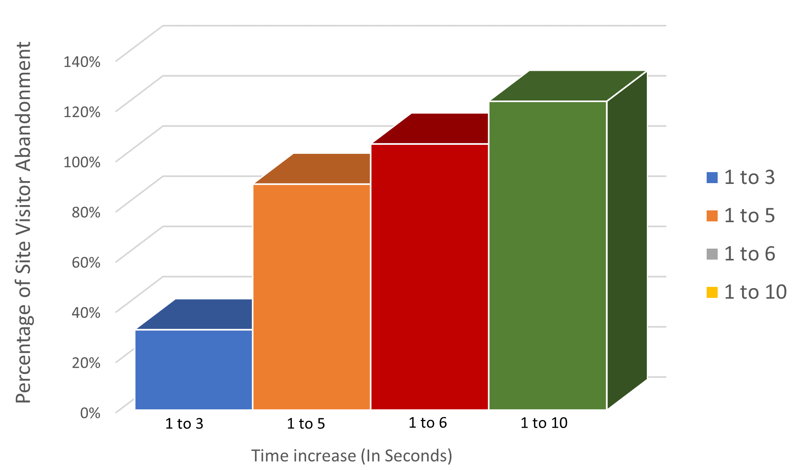
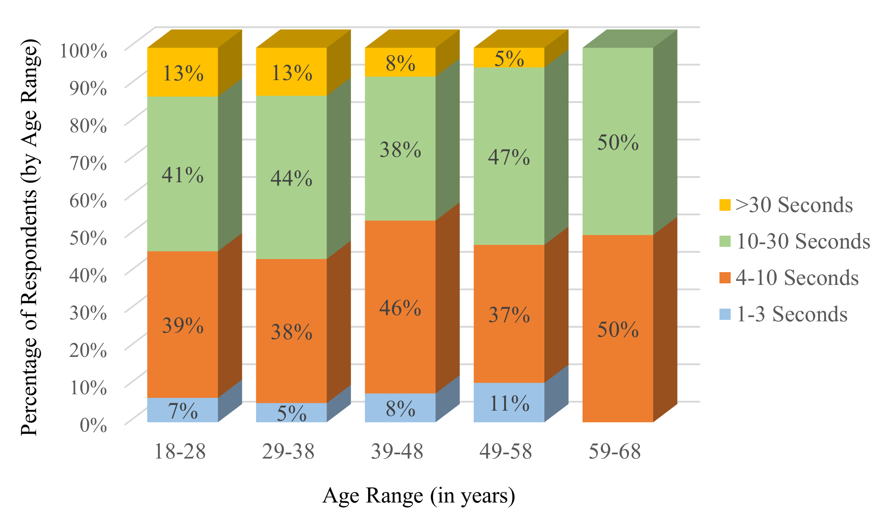
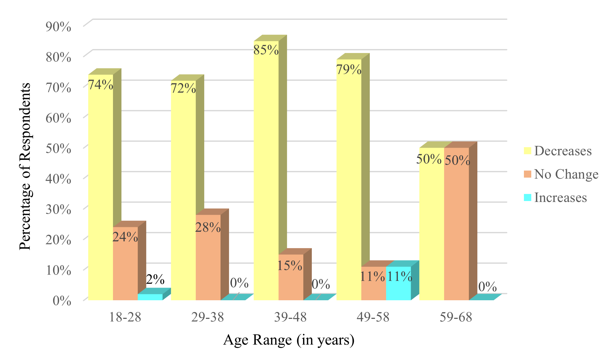
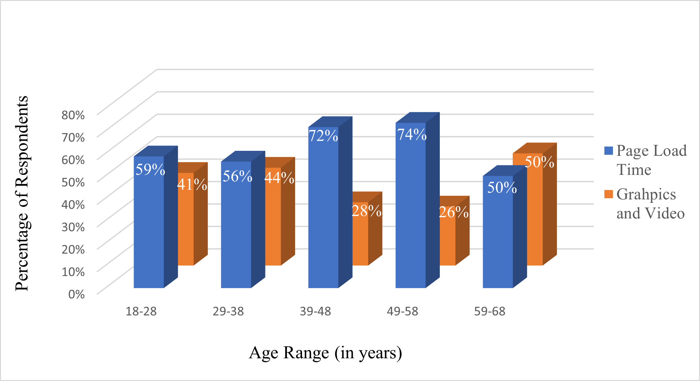
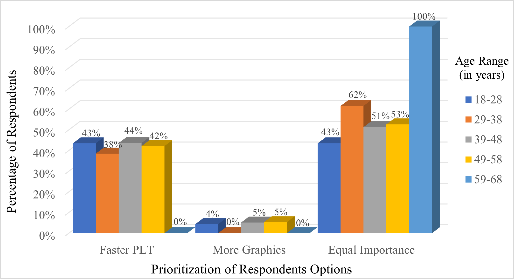
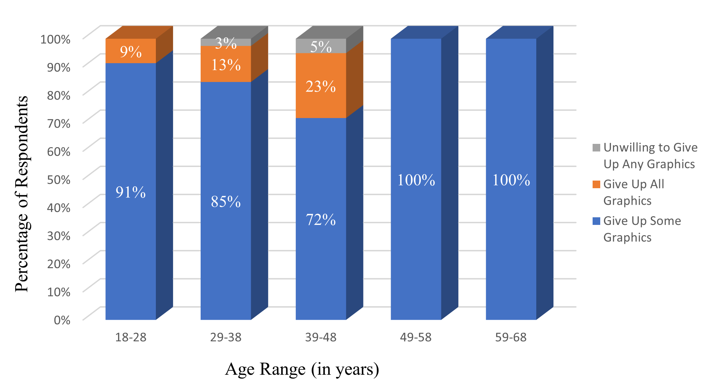

Qualitative Research and Research Report
Much of the work that I do as a researcher is protected by non-disclosure agreements. This research project was conducted during my studies at Arizona State University. I've included it here to demonstrate the elements in a way that is open and accessible to the public.
Table of Contents
Chapter 1: Introduction
- Need for the Project
- Significance of the Project
- Statement of the Problem
- Research Objectives
- Assumptions
- Limitations of the Project
- Summary
Chapter 2: Review of Related Literature
- Introduction
- Page Load Time (PLT)
- Prolonged Page Load Speed Increases Site Abandonment
- Page Load Speed Influences Conversion Rate
- Site Visitors Prioritize Page Load Speed Over Animation and Images
- Attention Spans Have Become Shorter
- Summary
Chapter 3: Methodology
Chapter 4: Results
- Introduction
- Survey Results
- Question 1: What is Your Gender?
- Question 2: What is Your Age Range?
- Question 3: How long will you wait for a page to load before leaving the page?
- Question 4: Does a longer than expected page load time change your willingness to complete a purchase on a website?
- Question 5: Which is more important to you?
- Question 6: Which of the following options would you prefer?
- Question 7: Would you be willing to give up graphics and video in order to speed up page load time?
- Summary
Chapter 5: Conclusion and Recommendations
- Introduction
- Research Objective 1: To determine the correlation between age range and tolerance for PLT
- Research Objective 2: To determine what time frame site visitors will tolerate, relative to their age group
- Research Objective 3: To determine whether prolonged PLT affects bounce rate, conversion rate, or both among age groups
- Conclusions
- Recommendations
- Summary
References
- Popular Mechanics
- Portent
- Unbounce
- Hubspot
- Time Magazine
- Forbes
- Nielsen Norman Group
- Think With Google, 2017
- Think With Google, 2018
- Usability.gov
List of Figures
- Figure 1: Page load time increase correlates to increased percentage of site abandonment
- Figure 2: Respondents’ results to survey question 3: How long will you wait for a page to load before leaving the page?
- Figure 3: Respondents’ results to survey question 4: Does a longer than expected page load time change your willingness to complete a purchase on a website?
- Figure 4: Respondents’ results to survey question 5: Which is more important to you?
- Figure 5: Respondents’ results to survey question 6: Which of the following options would you prefer?
- Figure 6: Respondents’ results to survey question 7: Would you be willing to give up graphics and video in order to speed up page load time?
List of Tables
Chapter 1: Introduction
In an e-commerce setting, page load time (PLT) is a metric that affects website ranking. Lowered Google rankings mean that potential site visitors are less likely to find your site on an organic Google search. Prolonged PLT also increases site abandonment, and this lowers a website’s ranking on a Google search even further (Jeffers, 2019). These ranking reductions reduce the effectiveness of search engine optimization (SEO) and marketing campaigns, thus rendering meaningless much of the time and funds devoted to these efforts (Loughran et al., 2018). Available data indicates that PLT is an important metric in rankings and in conversion rates (Jeffers, 2019). There is no data currently available that explores whether there is a correlation between age range and tolerance for PLT. This helps e-commerce businesses to maximize the benefits of funds devoted to SEO and marketing campaigns.
Need for the Project
E-commerce businesses often fund SEO and marketing strategies aimed at increasing Google rankings and optimizing site visitor traffic (McGinley, 2021; Muthoni, 2021). Further, personas have become such a standard practice in web development within the e-commerce sphere that best practices for creating personas is outlined on Usability.Gov. Age range is a metric often included in a persona’s demographic information and is recommended by Usability.Gov (n.d.). A better understanding of how specific age groups view PLT is a metric that is not currently tracked or understood.
Significance of the Project
Research indicates that approximately forty percent of site visitors will abandon a page if it takes more than three seconds to load. With only three seconds for maximum retention of site visitor, web designers must understand the importance of PLT for websites designed for e-commerce businesses load. A potential loss of approximately forty percent of site visitors means a potential loss of forty percent of revenue (Jones, 2009). It is not understood if there is a correlation between the average age of site visitors and tolerance for PLT.
Statement of the Problem
Since page abandonment decreases site ranking, understanding the attitudes of site visitors is imperative for web designers and e-commerce business owners. Prolonged PLT increases site abandonment, which sets off a chain reaction. Increased site abandonment decreases Google search rankings. Decreased Google search rankings decreases overall site traffic. Decreased overall site traffic has the potential to decrease overall sales and revenue. Understanding whether certain age groups have a higher or lower tolerance for prolonged PLT is imperative to designing a site that will optimize conversion of site visitors to completed tasks, such as purchases. Many e-commerce businesses devote research to the development of persona(s), which are utilized throughout the design process. Personas are tools frequently utilized in considering which design elements will best appeal to site visitors. However, a metric that is not considered during the creation and use of a persona(s) is tolerance to PLT based upon age range of the persona(s). Whether PLT tolerance increases or decreases based upon a site visitors age range is not known and it is the aim of this study to determine that information.
Research Objectives
- To determine the correlation between age range and tolerance for PLT.
- To determine what time frame site visitors will tolerate, relative to their age group.
- To determine whether prolonged PLT affects bounce rate, conversion rate, or both among age groups.
Assumptions
Before conducting the study, it is assumed that site visitors who were born post-internet era have less tolerance for PLT and thus will abandon pages with longer PLT at a higher rate than site visitors who were born prior to the release of the world wide web into the public domain. For the purpose of this study, we will use 1993, the year the world wide web was put into the public domain (Grossman, 2018), as the benchmark for pre- and post-internet era.
Limitations of the Project
There are two major limitations to this study. The first is the sample size. It would not be possible to poll the entire population of online shoppers over the age of 18. For this reason, a sample will be used, and data will be extrapolated to represent the whole target audience. The second limitation exists with the methodology of the survey being conducted. The survey will be sent out utilizing social media channels, most of whom presumably have access to high-speed internet. They may have less patience for slower page load times than is representative of the whole population of online shoppers over 18 years of age since they are not accustomed to the prolonged page load times experienced by users of the internet who do not utilize high-speed internet. As a result, there exists a potential for bias in the respondents answers as a result of their own experiences and expectations.
Summary
Research indicates that zero to four seconds of PLT is the optimal metric for site visitor retention (Jeffers, 2019). However, research has not yet fleshed out whether the age of a site visitor impacts their tolerance for PLT. If the target audience of an e-commerce site has a longer tolerance for PLT then the bounce rate will be lower despite prolonged PLT. Bounce rate is a metric that affects site rankings and potential revenue. Understanding how specific age groups respond to prolonged PLT helps e-commerce businesses understand how to design their stie for their target audience. The aim of this study is to determine whether age is a factor, and if so, what the tolerance for PLT is within specific age ranges and, thus, how that affects bounce and conversion rates.
Chapter 2: Review of Related Literature
Introduction
Prolonged PLT increases site abandonment rates and influences conversion rates. Research shows that site visitors prioritize PLT over images, graphics, and videos (Loughran et al., 2018). However, how these metrics are broken down within each age group is not known. Understanding how each age group views PLT and how that influences conversion on a site is an important metric for any e-commerce business.
Page Load Time (PLT)
Available data reflects that PLT is a metric that affects website ranking and conversion rates (Jeffers, 2019). According to the Nielsen Norman group, conversion rate is a metric used to represent the percentage of users who complete a desired action. The most common example is the percentage of website visitors who make a purchase on an e-commerce website (2013). Approximately forty percent of pages with page load times that exceed three seconds will be abandoned by site visitors (Jones, 2009) and zero to four seconds yields the highest site visitor retention (Jeffers, 2019).
Prolonged Page Load Speed Increases Site Abandonment
Available data from Think with Google reveals that as PLT increases, so does the probability of bounce, also known as site abandonment (An, 2018). Figure 1, below, shows this percentage increase with PLT increase.
Figure 1: Page load time increase (in seconds) correlates to increased percentage of site abandonment.
Think with Google also revealed that in an analysis of 11 million mobile sites, 15.3 seconds was the average PLT (2018), well exceeding the timeframe in which a 123 percent decrease in conversion rates has been observed.
Page Load Speed Influences Conversion Rate
Conversion rate is a metric obtained by dividing the number of completed desired actions by the number of site visitors (Nielsen, 2013). According to a survey conducted by Unbounce, close to 70 percent of respondents admitted that they are less likely to purchase from sites that have slow PLT (Loughran et al., 2018). Research conducted reveals that the highest conversion rates exist when PLT is between zero and two seconds (Jeffers, 2019) In an analysis by Think with Google, of 11 million mobile sites, 70 percent of landing pages took over five seconds to load above the fold and over seven seconds to load below the fold (2018). This well exceeds the optimal time frame of zero to two seconds of PLT.
Site Visitors Prioritize Page Load Speed Over Animation and Images
Over 50 percent of survey respondents said they would be willing to give up animations and video for faster PLT. Over 24 percent said they would be willing to give up images (Loughran et al., 2018). Think with Google analysis revealed that when the number of elements on a page increases from 400 to 6,000, conversion rate drops 95 percent (2017).
Attention Spans Have Become Shorter
Research indicates that since 2000, the average attention span has dropped from 12 seconds to eight seconds. This change coincides roughly with the revolution of mobile devices (McSpalien, 2015). If this trend continues and attention spans become shorter, it is all the more imperative to understand which age demographics have more and which have less tolerance for PLT. An overall change in the general population may mean that the attitudes of the whole population have changed, possibly affected by the mobile revolution. However, the change in attention span may also be indicative of a shorter attention span of the newest generation to enter the marketplace, those in generation Z. Understanding tolerance for PLT based upon age group will help explain what has spurred this decrease in attention span.
Summary
There is an abundance of data on the attitudes of the overall consumer population regarding PLT. The available data shows that consumers prioritize page load speed over image, graphics, and animation. The data shows that increased PLT increases site abandonment and decreases conversion rates. And research indicates that attention span has decreased by four seconds. That data is not broken down into demographics such as age range.
Chapter 3: Methodology
Introduction
To learn the necessary information for this research project, a study was sent soliciting participation from online shoppers. The surveys were created using Google Forms and asked for responses anyone over the age of 18 who has purchased any item from an e-commerce website. Collected data was used to draw conclusions and make recommendations for best practices. The survey yielded 145 respondents.
Survey Development
To obtain meaningful feedback, a survey was created using Google Forms and was sent through social media channels, soliciting participants 18 years of age and older who engage in e-commerce shopping and purchases. The aim of the survey was to obtain quantifiable data and to determine if that data could be used to draw conclusions and make recommendations that e-commerce businesses and web designers can utilize to minimize bounce rates and optimize conversion rates.
Determine Participants
The targeted audience of the survey was both male and female adults (over the age of 18) who engage in e-commerce shopping and purchases. Since the full audience for this demographic would be quite large, a sample was used, and the data collected is extrapolated to represent the whole target audience.
Send Survey
The online survey was sent through social media channels. A group message was posted in both Slack and Facebook requesting participation from recipients. The survey was sent November 4th. It was open for 3 weeks, closing on November 25th. A total of 145 respondents answered the survey questions. Of the 145 respondents, 107 identified as female, 28 identified as male, 6 identified as non-binary, and 4 preferred not to answer. After the survey data was collected, the information was analyzed, conclusions were drawn, and recommendations were made.
Summary
To obtain relevant data, a survey will be sent. The survey will be created using Google Forms. The survey will be sent via social media channels. A sample of the population of English-speaking online shoppers will be collected, analyzed, conclusions will be drawn, and recommendations will be created.
Chapter 4: Results
Introduction
A total of 145 respondents answered the survey questions. There were 46 respondents in the age range of 18 to 28 years, 39 in the age range of 29 to 38 years, 39 in the age range of 39 to 48 years, 19 in the age range of 49 to 58 years, and two in the age range of 59 to 68 years. There were no juveniles (under 18 years old) or respondents over 68 years of age. There was a total of seven survey questions.
Survey Results
Question 1: What is Your Gender?
101 respondents self-identified as female, 28 self-identified as male, six responded as non-binary, and four did not answer.
Question 2: What is Your Age Range?
There were 46 respondents in the age range of 18 to 28 years, 39 in the age range of 29 to 38 years, 39 in the age range of 39 to 48 years, 19 in the age range of 49 to 58 years, and two in the age range of 59 to 68 years. There were no juveniles (under 18 years old) or respondents over 68 years of age.
Question 3: How long will you wait for a page to load before leaving the page?
Figure 2 below shows the results to Question 3. The majority of respondents answered that they would wait between four and thirty seconds for a page to load before abandoning the page. Answers were relatively even across age groups.
Figure 2: Respondents’ results to survey question 3: How long will you wait for a page to load before leaving the page?
Question 4: Does a longer than expected page load time change your willingness to complete a purchase on a website?
Figure 3 below shows the answers to survey question 4. With the exception of respondents between the ages of 59 and 68, 70 percent or higher of respondents within all age groups answered that a longer than expected page load time would decrease their willingness to purchase from a website. Of the two respondents in the 59 to 68 age range, one answered that a longer than expected page load time would decrease their willingness to purchase from a website and the other answered that a longer than expected page load time would not change their willingness at all.
Figure 3: Respondents’ results to survey question 4: Does a longer than expected page load time change your willingness to complete a purchase on a website?
Figure four below shows the results of respondents to survey question 5. With the exception of respondents between the ages of 59 and 68, more than half of respondents in each age group answered that page load time was more important to them than graphics and videos. The highest results were in the age ranges 39-48 and 49-58 where 72 percent and 74 percent of respondents, respectively, answered that page load time was more important than graphics and video. Of the two respondents in the 59 to 68 age range, answers were divided 50/50.
Figure 4: Respondents’ results to survey question 5: Which is more important to you?
Question 6: Which of the following options would you prefer?
Figure 5 below shows the results of respondents to survey question 6. Most respondents answered that they would either prefer a faster PLT over more graphics or that both were equally important. Four percent of respondents age 18 to 28, five percent age 39 to 48, and five percent age 49 to 58 answered that they preferred more graphics. The two respondents age 59 to 68 answered unanimously that both PLT and graphics and video were of equal importance.
Figure 5: Respondents’ results to survey question 6: Which of the following options would you prefer?
Question 7: Would you be willing to give up graphics and video in order to speed up page load time?
Figure 6 below shows the results of respondents to survey question 7. Almost all respondents answered that they would be willing to give up some or all graphics in order speed up PLT. The largest percentage of respondents who answered that they would be willing to give up all graphics were in the 18 to 28, 29 to 38, and 39 to 48 age ranges, with 9 percent, 13 percent, and 23 percent, respectively. 3 percent of respondents age ranges 29 to 38 and 5 percent of respondents age ranges 39 to 48 percent answered that they would be unwilling to give up any graphics in favor of faster PLT.
Figure 6: Respondents’ results to survey question 7: Would you be willing to give up graphics and video in order to speed up page load time?
Summary
In total, 145 Respondents replied to the survey and answered the questions. Respondents answers to questions were similar across all age groups, with no major variations being observed. Respondents reported that they would be willing to wait between four and thirty seconds for a page to load before abandoning the page, that prolonged page load time decreases their willingness to make a purchase from an e-commerce site, that they either prioritized page load time over graphics and video or found them to be of equal importance, and that they would be willing to give up some or all graphics in favor of a faster page load time.
Chapter 5: Conclusion and Recommendations
Introduction
A survey was sent out via social media channels using Google Forms. The targeted audience of the survey was both male and female adults (over the age of 18) who engage in e-commerce shopping and purchases. 145 respondents in total answered the survey. Replies to questions were similar across all age groups, with no major variations observed among age groups.
Research Objective 1: To determine the correlation between age range and tolerance for PLT
Respondents answered similarly across age ranges that they would either prefer a faster PLT over more graphics and video or that both were equally important. The two respondents in the age group 59 to 68 years answered unanimously that both graphics and video as well as PLT were of equal importance. The other age groups answered almost evenly split that both graphics and video as well as PLT were of equal importance or that PLT was more important. Five percent or less of age groups 18 to 28, 39 to 48, and 49 to 58 answered that Graphics were more important. Most respondents answered that they would either prefer a faster PLT over more graphics or that both were equally important. Zero percent of remaining age groups answered that graphics and video were more important.
Research Objective 2: To determine what time frame site visitors will tolerate, relative to their age group
The majority of respondents reported that they would be willing to wait between four and thirty seconds for a page to load before abandoning the page.
- 41 percent of respondents 18 to 28 years of age replied that they would wait ten to thirty seconds for a page to load before abandoning. 39 percent of respondents in the same age group reported they would wait between four and ten seconds.
- 44 percent of respondents 29 to 38 years of age replied that they would wait between ten and thirty seconds for a page to load before abandoning. 38 percent of respondents in the same age group replied that they would wait between four and ten seconds.
- 38 percent of respondents 39 to 48 years of age replied that they would wait ten and thirty seconds for a page to load before abandoning. 46 percent of respondents in the same age group replied that they would wait four to ten seconds.
- 47 percent of respondents 39 to 58 years or age replied that they would wait ten to thirty seconds for a page to load before abandoning. 37 percent of respondents in the same age group replied that they would wait four to ten seconds.
- Of the two respondents who represented the 59 to 68 age group, they were evenly divided in waiting four to ten and ten to thirty seconds for a page to load before abandoning.
Research Objective 3: To determine whether prolonged PLT affects bounce rate, conversion rate, or both among age groups
Table 1 below shows that respondents answered similarly across age groups in favor that prolonged PLT would decrease their willingness to complete a purchase from an e-commerce site. Respondents aged 39 to 48 answered the highest that decreases their willingness to complete a purchase. The second highest group to answer the same was aged 29 to 38 with 79 percent. The third highest was the group aged 18 to 28 with 74 percent. The fourth highest was the group aged 29 to 38 with 72 percent. The two respondents in the age group 59 to 68 answered evenly that willingness was decreased or unchanged.
| Ages 18-29 | Ages 29-38 | Ages 39-48 | Ages 49-58 | Ages 59-68 | |
|---|---|---|---|---|---|
| Decreases Willingness (inpercent) | 74 | 72 | 85 | 79 | 50 |
| No Change (in percent) | 24 | 28 | 15 | 11 | 50 |
| Increases Willingness (in percent) | 2 | 0 | 0 | 11 | 0 |
Conclusions
Study respondents answered similarly across all age ranges in favor of PLT over more graphics and video. Similarly, respondents across all age ranges answered similarly that their tolerance for PLT lied somewhere between four and 30 seconds. No age groups appeared to have a stronger preference for PLT over graphics and video or a shorter or longer tolerance for page load times relative to the other age groups. In conclusion this research indicates that current research available is indicative of the attitudes of all age groups.
Recommendations
This study was only able to source two participants in the age group 59 to 68 and was not able to source any participants over 68 years of age. Further studies conducted should look at better ways of sourcing study participants that represent those age groups. Aliitionally, as the study population ages, attitudes will change over time. In other words, studies such as this one aimed at evaluation the attitudes of users in specific age groups will need to be conducted again and again to capture current attitudes.
The study was sent out to participants using social media channels. Most study participants presumably have access to high-speed internet. There, therefore, exists a potential user bias as participants may have less patience for slower page load times than is representative of the whole population of online shoppers over 18 years of age since they are not accustomed to the prolonged page load times. Subsequent studies should look at better ways of sourcing study participants to be more inclusive of users of the internet who live in more rural areas and may not have access to high-speed internet.
Summary
With a total of 145 respondents, the survey created to answer these questions revealed the attitudes toward PLT across all age groups. Age groups were broken down into the following categories:
- 18-28 years of age
- 29-38 years of age
- 39-48 years of age
- 49-58 years of age
- 59-68 years of age
There were no respondents under 18 or over 68 years of age.
Respondents answered questions related to their likelihood to purchase from a site with prolonged PLT similarly across age groups. Respondents answered between 50 and 85 percent that prolonged PLT decreased their willingness to complete a purchase. Between 28 and 50 percent answered that prolonged PLT had no effect on their willingness to complete a purchase. It should be noted that the group that answered 50 percent in favor of these answers only had two respondents. Those two respondents were in the 59 to 68 years age group and were evenly divided in their answers, prolonged PLT either reduced their willingness to complete a purchase or had no effect. Removing those two respondents would mean that at least 72 percent of respondents in each age range reported that prolonged PLT reduced their willingness to complete a purchase. In other words, prolonged PLT reduces conversion rates, with no major deviations across age groups.
The responses to the questions related to whether respondents prioritized PLT or graphics and video were also answered evenly across all age groups. Respondents also answered evenly across all age groups that their tolerance for PLT was between four and 30 seconds. This supports the conclusion that web users across age groups have similar attitudes toward PLT, with no major deviation observed across age groups. These answers also support the conclusion that prolonged PLT decreases conversion rates, increases bounce rates, and that there is no major deviation among age groups with regard to the timeframe site visitors will tolerate for a page to load.
References
Jeffers, J. (2019, August 20). Site Speed is (Still) Impacting Your Conversion Rate. Portent.
McSpalien, K. (2015, May 14). You Now Have a Shorter Attention Span Than a Goldfish. Time Magazine.
Muthoni, Jonas (2021, June 14). 10 Key Benefits Of SEO For Your Business. Forbes.
Nielsen, J. (2013, November 24). Conversion Rates. Nielsen Normal Group.